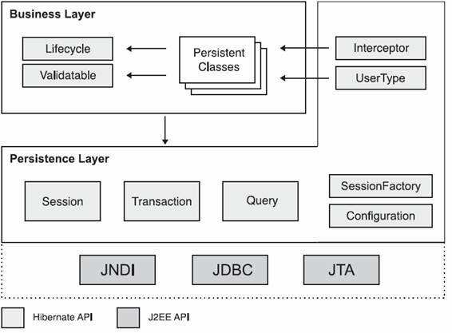
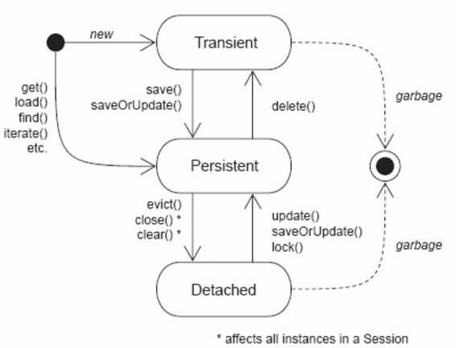

Informações
| Tipo: | Tutorial |
|---|---|
| Data de Publicação: | 23/10/2005 |
| Revisado em: | 23/10/2005 |
Vote!
Tags Relacionadas
Comentários ( 13 )
Imprimir
Introdução ao Hibernate
por:
Raphaela Galhardo Fernandes (raphaela@jeebrasil.com.br)
Gleydson Lima (gleydson@jeebrasil.com.br)
O Hibernate é um framework de mapeamento objeto relacional para aplicações Java. É uma ferramenta para mapear classes Java em tabelas do banco de dados e vice-versa. Neste tutorial será apresentada a arquitetura do Hibernate, bem como conceitos relacionados à persistência.
Introdução
O Hibernate é um framework de mapeamento objeto relacional para aplicações Java, ou seja, é uma ferramenta para mapear classes Java em tabelas do banco de dados e vice-versa. É bastante poderoso e dá suporte ao mapeamento de associações entre objetos, herança, polimorfismo, composição e coleções.
O Hibernate não apresenta apenas a função de realizar o mapeamento objeto relacional. Também disponibiliza um poderoso mecanismo de consulta de dados, permitindo uma redução considerável no tempo de desenvolvimento da aplicação.
Este tutorial é o primeiro de uma série de outros sobre Hibernate a serem disponibilizados aqui no site do JEEBrasil. A cada tutorial, um novo assunto sobre Hibernate será abordado. Para iniciar, será apresentada a arquitetura do Hibernate assim como alguns conceitos importantes relacionados à persistência para o entendimento dos mapeamentos objeto-relacional.
Arquitetura
A arquitetura do Hibernate é formada basicamente por um conjunto de interfaces. A Figura 1 apresenta as interfaces mais importantes nas camadas de negócio e persistência. A camada de negócio aparece acima da camada de persistência por atuar como uma cliente da camada de persistência. Vale salientar que algumas aplicações podem não ter a separação clara entre as camadas de negócio e de persistência.
De acordo com a Figura 1, as interfaces são classificadas como:
- Interfaces responsáveis por executar operações de criação, deleção, consulta e atualização no banco de dados: Session, Transaction e Query;
- Interface utilizada pela aplicação para configurar o Hibernate: Configuration;
- Interfaces responsáveis por realizar a interação entre os eventos do Hibernate e a aplicação: Interceptor, Lifecycle e Validatable.
- Interfaces que permitem a extensão das funcionalidades de mapeamento do Hibernate: UserType, CompositeUserType, IdentifierGenerator.
O Hibernate também interage com APIs já existentes do Java: JTA, JNDI e JDBC.

Figura 1 - Arquitetura do Hibernate
De todas as interfaces apresentadas na Figura 1, as principais são: Session, SessionFactory, Transaction, Query, Configuration. Os sub-tópicos seguintes apresentam uma descrição mais detalhada sobre elas.
Session (org.hibernate.Session)
O objeto Session é aquele que possibilita a comunicação entre a aplicação e a persistência, através de uma conexão JDBC. É um objeto leve de ser criado, não deve ter tempo de vida por toda a aplicação e não é threadsafe. Um objeto Session possui um cache local de objetos recuperados na sessão. Com ele é possível criar, remover, atualizar e recuperar objetos persistentes.
SessionFactory (org.hibernate.SessionFactory)
O objeto SessionFactory é aquele que mantém o mapeamento objeto relacional em memória. Permite a criação de objetos Session, a partir dos quais os dados são acessados, também denominado como fábrica de objetos Sessions.
Um objeto SessionFactory é threadsafe, porém deve existir apenas uma instância dele na aplicação, pois é um objeto muito pesado para ser criado várias vezes.
Configuration (org..hibernate.Configuration)
Um objeto Configuration é utilizado para realizar as configurações de inicialização do Hibernate. Com ele, define-se diversas configurações do Hibernate, como por exemplo: o driver do banco de dados a ser utilizado, o dialeto, o usuário e senha do banco, entre outras. É a partir de uma instância desse objeto que se indica como os mapeamentos entre classes e tabelas de banco de dados devem ser feitos.
Transaction (org.hibernate.Transaction
A interface Transaction é utilizada para representar uma unidade indivisível de uma operação de manipulação de dados. O uso dessa interface em aplicações que usam Hibernate é opcional. Essa interface abstrai a aplicação dos detalhes das transações JDBC, JTA ou CORBA.
Interfaces Criteria e Query
As interfaces Criteria e Query são utilizadas para realizar consultas ao banco de dados.
Classes Persistentes
As classes persistentes de uma aplicação são aquelas que implementam as entidades domínio de negócio. O Hibernate trabalha associando cada tabela do banco de dados a um POJO (Plain Old Java Object). POJO´s são objetos Java que não extendem nenhuma classe nem implementam uma interface. A Listagem 1 apresenta a classe Pessoa representando uma classe POJO.
package br.com.jeebrasil.dominio.Pessoa;
public class Pessoa {
private int id;
private long cpf;
private String nome;
private int idade;
private Date dataNascimento;
public Pessoa(){}
public int getId() {
return id;
}
private void setId(int Long id) {
this.id = id;
}
public long getCpf(){
return cpf;
}
public void setCpf(long cpf){
this.cpf = cpf;
}
public Date getDataNascimento() {
return dataNascimento;
}
public void setDataNascimento (Date dataNascimento) {
this.dataNascimento = dataNascimento;
}
public String getNome () {
return nome;
}
public void setNome (Stringnome) {
this.nome = nome;
}
public int getIdade(){
return idade;
}
public void setIdade(int idade){
this.idade = idade;
}
}
Listagem 1 - Exemplo de Classe POJO
Considerações:
- Hibernate requer que toda classe persistente possua um construtor padrão sem argumentos, assim, o Hibernate pode instanciá-las simplesmente chamando Construtor.newInstance();
- Observe que a classe Pessoa apresenta métodos setters e getters para acessar ou retornar todos os seus atributos. O Hibernate persiste as propriedades no estilo JavaBeans, utilizando esses métodos;
- A classe Pessoa possui um atributo id que é o seu identificador único. É importante que, ao utilizar Hibernate, todos os objetos persistentes possuam um identificador e que eles sejam independentes da lógica de negócio da aplicação.
Identidade/Igualdade entre Objetos
Em aplicações Java, a identidade entre objetos pode ser obtida a partir do operador ==. Por exemplo, para verificar se dois objetos obj1 e obj2 possuem a mesma identidade Java, basta verificar se obj1 == obj2. Dessa forma, dois objetos possuirão a mesma identidade Java se ocuparem a mesma posição de memória.
O conceito de igualdade entre objetos é diferente. Dois objetos, por exemplo, duas Strings, podem ter o mesmo conteúdo, mas verificar se as duas são iguais utilizando o operador ==, pode retornar um resultado errado, pois como já citado, o operado == implicará em uma verificação da posição de memória e não do conteúdo. Assim, para verificar se dois objetos são iguais em Java, deve-se utilizar o método equals, ou seja, verificar se obj1.equals(obj2).
Incluindo o conceito de persistência, passa a existir um novo conceito de identidade, a identidade de banco de dados. Dois objetos armazenados em um banco de dados são idênticos se forem mapeados em uma mesma linha da tabela.
Escolhendo Chaves Primárias
Um passo importante ao utilizar o Hibernate é informá-lo sobre a estratégia utilizada para a geração de chaves primárias.
Uma chave é candidata é uma coluna ou um conjunto de colunas que identifica unicamente uma linha de uma tabela do banco de dados. Ela deve satisfazer as seguintes propriedades:
- Única;
- Nunca ser nula;
- Constante.
Uma única tabela pode ter várias colunas ou combinações de colunas que satisfazem essas propriedades. Se a tabela possui um único atributo que a identifique, ele é por definição a sua chave primária. Se possuir várias chaves candidatas, uma deve ser escolhida para representar a chave primária e as demais serem definidas como chaves únicas.
Muitas aplicações utilizam como chaves primárias chaves naturais, ou seja, que têm significados de negócio. Por exemplo, o atributo cpf da tabela Pessoa (associada à classe Pessoa). Essa estratégia pode não ser muito boa em longo prazo, já que uma chave primária adequada deve ser constante, única e não nula. Dessa forma, se for desejado que a chave primária da tabela Pessoa seja uma outra ao invés do cpf, podem surgir problemas já que provavelmente o cpf deve ser referenciado em outras tabelas. Um problema que poderia acontecer seria a remoção do cpf da tabela.
O Hibernate apresenta vários mecanismos internos para a geração de chaves primárias. Veja a Tabela 1.
| Mecanismo | Descrição |
| Identity | Mapeado para colunas identity no DB2, MySQL, MSSQL, Sybase, HSQLDM, Infomix. |
| Sequence | Mapeado em seqüências no DB2, PostgreSQL, Oracle, SAP DB, Firebird (ou generator no Interbase). |
| Increment | Lê o valor máximo da chave primária e incrementa um. Deve ser usado quando a aplicação é a única a acessar o banco e de forma não concorrente. |
| Hilo | Usa algoritmo high/low para geração de chaves únicas. |
| uudi.hex | Usa uma combinação do IP com um timestamp para gerar um identificador único na rede. |
Tabela 1 - Mecanismos para Geração de Chaves Primárias
Objetos Persistentes, Transientes e Detached
Nas diversas aplicações existentes sempre que for necessário propagar o estado de um objeto que está em memória para o banco de dados ou vice-versa, há a necessidade de que a aplicação interaja com uma camada de persistência. Isto é feito, invocando o gerenciador de persistência e as interfaces de consultas do Hibernate. Quando interagindo com o mecanismo de persistência, é necessário para a aplicação ter conhecimento sobre os estados do ciclo de vida da persistência.
Em aplicações orientadas a objetos, a persistência permite que um objeto continue a existir mesmo após a destruição do processo que o criou. Na verdade, o que continua a existir é seu estado, já que pode ser armazenado em disco e então, no futuro, ser recriado em um novo objeto.
Em uma aplicação não há somente objetos persistentes, pode haver também objetos transientes. Objetos transientes são aqueles que possuem um ciclo de vida limitado ao tempo de vida do processo que o instanciou. Em relação às classes persistentes, nem todas as suas instâncias possuem necessariamente um estado persistente. Elas também podem ter um estado transiente ou detached.
O Hibernate define estes três tipos de estados: persistentes, transientes e detached. Objetos com esses estados são definidos como a seguir:
- Objetos Transientes: são objetos que suas instâncias não estão nem estiveram associados a algum contexto persistente. Eles são instanciados, utilizados e após a sua destruição não podem ser reconstruídos automaticamente;
- Objetos Persistentes: são objetos que suas instâncias estão associadas a um contexto persistente, ou seja, tem uma identidade de banco de dados.
- Objetos detached: são objetos que tiveram suas instâncias associadas a um contexto persistente, mas que por algum motivo deixaram de ser associadas, por exemplo, por fechamento de sessão, finalização de sessão. São objetos em um estado intermediário, nem são transientes nem persistentes.
O ciclo de vida de um objeto persistente pode ser resumido a partir da Figura 2.

Figura 2 - Ciclo de Vida - Persistência
De acordo com a figura acima, inicialmente, o objeto pode ser criado e ter o estado transiente ou persistente. Um objeto em estado transiente se torna persistente se for criado ou atualizado no banco de dados. Já um objeto em estado persistente, pode retornar ao estado transiente se for apagado do banco de dados. Também pode passar ao estado detached, se, por exemplo, a sessão com o banco de dados por fechada. Um objeto no estado detached pode voltar ao estado persistente se, por exemplo, for atualizado no banco de dados. Tanto do estado detached quanto do estado transiente o objeto pode ser coletado para destruição.
Instalando o Hibernate
Instalar o Hibernate é uma tarefa bastante simples. O primeiro passo é copiar sua versão do site http://hibernate.org, disponível em um arquivo compactado. Por fim, este arquivo deve ser descompactado e seu conteúdo consiste em um conjunto de arquivos JARs. Esses arquivos devem ser referenciados no classpath da aplicação, juntamente com a classe do driver do banco de dados utilizado.
Conclusões
Neste primeiro tutorial ainda não foi apresentado nenhum mapeamento objeto relacional utilizando o Hibernate. Por outro lado, buscou-se prover um embasamento teórico do Hibernate, permitindo um melhor entendimento dos mapeamentos das próximas edições.
Referências
- Christian Bauer e Gavin King. Hibernate in Action. 2005.
- Grupo Hibernate. Hibernate Reference Documentation. Version 3.0.5. Obtido em http://www.hibernate.org
- Gleydson de Azevedo Ferreira Lima. Material Didático. 2005.
- Nick Heudecker. Introdução ao Hibernate.
- Maurício Linhares. Introdução ao Hibernate 3.
- Francesc Rosés Albiol. Introducción a Hibernate. 2003.
- Fabiano Kraemer, Jerônimo Jardel Vogt. Hibernate, um Robusto Framework de Persistência Objeto-Relacional. 2005.
Comentários (13)
- Amigão, vc poderia me passar passo a passo, como configurar corretamente o hibernate no Eclipse 3.1? Grato
- postado por emerson ferreira lopes em 13/10/2006 às 23:21
- material de qualidade, nao me refiro só a esse artigo, mas a todos q falam de Hibernate. Vejo q vc's tem compromisso com desenvolviemento do conhecimento.
- postado por Frank em 16/10/2006 às 23:21
- Olá ferreira, a configuração do hibernate é igual para toda e qualquer IDE, mas se quer uma dica, olhe a referência que contêm no framework, pois lá explica tudo no passo-a-passo.
- postado por Marcel Mauricio em 19/10/2006 às 23:21
- Super interessante ese framework, como estudo ajva somente há 5 meses, achei esse framework muito semelhante a uma apicação que desenvolvi em PHP que relaciona as classes a um banco de dados MYSQL.
- postado por Mário Rizzi em 21/10/2006 às 23:21
- Esse artigo apresenta informações bem interessantes para todos aqueles que precisam iniciar seus trabalhos com Hibernate. Naturalmente exige uma base sobre JAVA, orientação a objetos, etc, mas, não precisa ser conhecimento profundo. Desenvolvi os artigos de 2 a 7, e me dei bem no meu trabalho de conclusão. É muito bom.
- postado por Bruno Alencar em 21/10/2006 às 23:21
- Esse artigo é muito interessante estou pensando em implementar um projeto com ele, mas gostaria de fazer alguns teste com varios relacionamentos com muitas tabelas
- postado por jeff em 26/10/2006 às 23:21
- show! primeira! isso sim é um artigo!
- postado por barros em 16/11/2006 às 23:21
- Faço tudo como dito no artigo..inclusive coloco os lib do hibernate na raiz do projeto(classpath), mas o eclipse não reconhece as classes do hibernate SessionFactory, Session, Transaction etc..gostaria de saber como faço para usar as classes do hibernate sem da erro de compilação nos arquivos do projeto usando hibernate como no arquivo HibernatyUtility..Obrigado..Grato pela atencão.Urgente..
- postado por Childerico em 20/11/2006 às 23:21
- Somente vale ressaltar que "String" == "String" é igual a true, devido ao pool de strings.
- postado por Anonimo em 06/03/2007 às 23:21
- Galera...qual Hibernate eu faço download no site?! :S
- postado por Hugo Nascimento Borges em 16/07/2007 às 23:21
- Cara excelente esse tutorial parabens ai
- postado por Victor em 15/01/2008 às 23:21
- Adorei este tutorial, dá uma boa introdução sobre o assunto. Mas ainda eu continuo com um em passe, alguém poderia me orientar passo-a-passo como configurar o hibernate no eclipse europa, tenho muita dificuldade.
- postado por Fernanda de Souza em 06/06/2008 às 23:21
- Este tutorial está fazendo parte do meu estudo, otima didatica! Parabens, vou recomenda-los aos meus amigos.
- postado por André Gomes em 30/12/2008 às 23:21